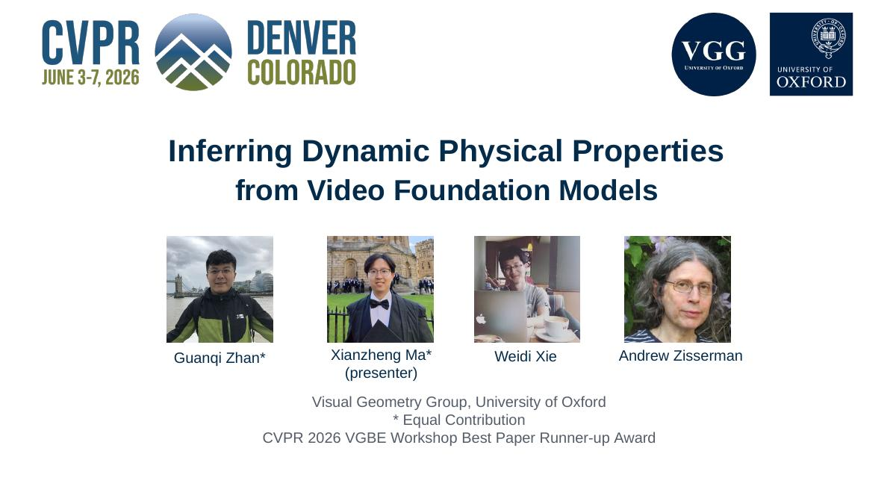

R.01 · 2022 – 2023
Reliable perception
Perception that holds up under fog, rain and domain shift; pose estimation with few labels.

World Models · Spatial Intelligence · Robot Learning
DPhil student, University of Oxford · Visual Geometry Group
From Modeling the World to General-Purpose Robot Intelligence
I study how robots can understand the physical world and generalize to new tasks.

I’m a DPhil student (since October 2023) in the Department of Engineering Science at the University of Oxford, supervised by Prof. Victor Prisacariu and Prof. Iro Laina, and part of both the Visual Geometry Group and the Active Vision Group. I also work closely with Prof. João F. Henriques and Prof. Ingmar Posner.
My research agenda connects perception, spatial understanding and physical world models, towards general-purpose robots that generalize:
Updated 2026-10-02
Physis-Lang is now on arXiv · project page · code
PhysVid: Best Paper Runner-Up, CVPR 2026 VGBE Workshop
Real-3DQA: Best Paper Runner-Up, CVPR 2026 3D-LLM/VLA Workshop
Awarded the Tencent Qingyun Student Travel Grant for ICLR 2026.
Our PhysVid paper has been accepted to CVPR 2026 Workshop VGBE.
I will be attending ICLR 2026 in Rio de Janeiro, Brazil to present our Real-3DQA paper. Feel free to reach out if you’d like to connect!
Our Beyond Single Object paper has been accepted to CVPR 2026 as a Finding.
Our See It, Say It, Sorted paper has been accepted to CVPR 2026.
Our Real-3DQA paper has been accepted to ICLR 2026.
We have released the second version of our 3D-LLM survey paper, updated to include literature up to July 2025.
New preprint: our PhysVid paper is now available on arXiv.
Selected as an Outstanding Reviewer (top 3%) at ICCV 2025.
Our Robotic Visual Instruction paper has been accepted to CVPR 2025.
Check out our 3D-LLM survey paper on 3D-related tasks empowered by LLMs and other foundation models.
We curated the Awesome-LLM-3D paper list for 3D-related tasks empowered by LLMs.
Two papers are accepted in AAAI 2024.
Started a new journey as a DPhil (PhD) student at the Visual Geometry Group and Active Vision Group, University of Oxford.
2022 → 2026
Foggy scene understanding; also REMOTE at AAAI and Rainy WCity at IJCAI.
Decorate the Newcomers — plus a CVPR 2023 Highlight for Matching Is Not Enough.
Visual Geometry Group & Active Vision Group.
Mapping 3D tasks via multimodal LLMs; v2 in Oct 2025.
Robotic Visual Instruction accepted to CVPR 2025.
Top 3% of reviewers at ICCV 2025.
Real-3DQA at ICLR 2026, with a Tencent Qingyun Student Travel Grant; two CVPR 2026 papers; Best Paper Runner-Up for Real-3DQA and PhysVid at CVPR 2026 workshops.
Physically plausible video world models, now on arXiv.
2022 → Now
From robust perception to spatial understanding and physical world models — towards robots that generalize.
R.01 · 2022 – 2023
Perception that holds up under fog, rain and domain shift; pose estimation with few labels.
R.02 · 2023 – 2026
Do 3D and multimodal models truly reason about space, or only appear to?
ICLR 2026
Testing whether 3D language models truly understand spatial relationships.


AlsoBeyond Single Object (CVPR 2026, Finding) · Point-Bind & Point-LLM (arXiv 2023)
R.03 · 2025 – now · current focus
Can models learn how the physical world evolves — well enough to be useful to robots?
arXiv preprint · 2026
Learning self-evolving physical language for more plausible video world models.


* equal contribution · † corresponding author · ‡ equal supervision · R.0n = research group
Liming Lu*, Xianzheng Ma*, Wenkun He*, Guanqi Zhan*†, Yilin Zhao, Junyu Chen, Mengyao Xu, Jiaojiao Fan, Wenhang Ge, Yuchao Gu, Yunze Liu, Boyi Li, Zhen Dong, Victor Prisacariu, Ming-Yu Liu, Song Han, Han Cai†
arXiv preprint, 2026
Xianzheng Ma*, Tao Sun*, Shuai Chen, Yash Bhalgat, Jindong Gu†, Angel X Chang, Iro Armeni, Iro Laina, Songyou Peng‡, Victor Adrian Prisacariu‡
International Conference on Learning Representations (ICLR) 2026; CVPR 2026 3D-LLM/VLA Workshop Best Paper Runner-Up Award
Can each reasoning step be checked against visual evidence?
Yongchang Zhang*, Xianzheng Ma*, Tianyi Liu, Guangquan Zhou, Yang Chen
IEEE/CVF Conference on Computer Vision and Pattern Recognition (CVPR) 2026
Kohsuke Ide, Ryousuke Yamada, Yue Qiu, Xianzheng Ma, Yoshihiro Fukuhara, Hirokatsu Kataoka, Yutaka Satoh
IEEE/CVF Conference on Computer Vision and Pattern Recognition (CVPR) 2026 (Finding)
Can elasticity, viscosity and friction be read from video?
Guanqi Zhan*, Xianzheng Ma*, Weidi Xie, Andrew Zisserman
CVPR 2026 Workshop on Video Generative Models: Benchmarks and Evaluation (VGBE) Best Paper Runner-Up · arXiv preprint released 2025
How should people tell a robot what to manipulate?
Yanbang Li, ZiYang Gong, Haoyang Li, Xiaoqi Huang, Haolan Kang, Guangpingbai, Xianzheng Ma
IEEE/CVF Conference on Computer Vision and Pattern Recognition (CVPR) 2025
Where do LLMs stand on 3D understanding, generation and embodied tasks?
Xianzheng Ma*, Brandon Smart*, Yash Bhalgat*, Shuai Chen, Xinghui Li, Jian Ding, Jindong Gu, Dave Zhenyu Chen, Songyou Peng, Jia-Wang Bian, Philip H Torr, Marc Pollefeys, Matthias Nießner, Ian D Reid, Angel X. Chang, Iro Laina, Victor Adrian Prisacariu
IJCV under review · arXiv 2024, v2 2025
Ziyu Guo, Renrui Zhang, Xiangyang Zhu, Yiwen Tang, Xianzheng Ma, Jiaming Han, Kexin Chen, Peng Gao, Xianzhi Li, Hongsheng Li, Pheng-Ann Heng
arXiv preprint, 2023
Can pose be estimated for object categories not seen in training?
Min Shi, Zihao Huang, Xianzheng Ma, Xiaowei Hu, Zhiguo Cao
IEEE/CVF Conference on Computer Vision and Pattern Recognition (CVPR) 2023 Highlight
How can a model keep adapting as test domains keep changing?
Yulu Gan, Xianzheng Ma, Yan Bai, Yihang Lou, Renrui Zhang, Nian Shi, Lin Luo
AAAI Conference on Artificial Intelligence (AAAI) 2023 Outstanding Student Paper
Xianzheng Ma, Zhixiang Wang, Yacheng Zhan, Yinqiang Zheng, Zheng Wang, Dengxin Dai, Chia-Wen Lin
IEEE/CVF Conference on Computer Vision and Pattern Recognition (CVPR) 2022 Oral
Xianzheng Ma, Hossein Rahmani, Zhipeng Fan, Bin Yang, Jun Chen, Jun Liu
AAAI Conference on Artificial Intelligence (AAAI) 2022
Xian Zhong*, Xianzheng Ma*, Shidong Tu, Kui Jiang, Wenxin Huang, Zheng Wang
International Joint Conference on Artificial Intelligence (IJCAI) 2022
Full, automatically updated list: Google Scholar ↗
Recording & slides
RecordingUploaded
Official Bilibili player. If it doesn’t load, use “Watch on Bilibili”.
ICLR’26高分开源 | 如何让模型真正理解3D空间？

CVPR 2026 · VGBE WorkshopOral
Talk videos appear as still frames in the PDF.
In Chinese
Xianzheng的具身学习笔记 @Oliver_embodied
Open profile ↗